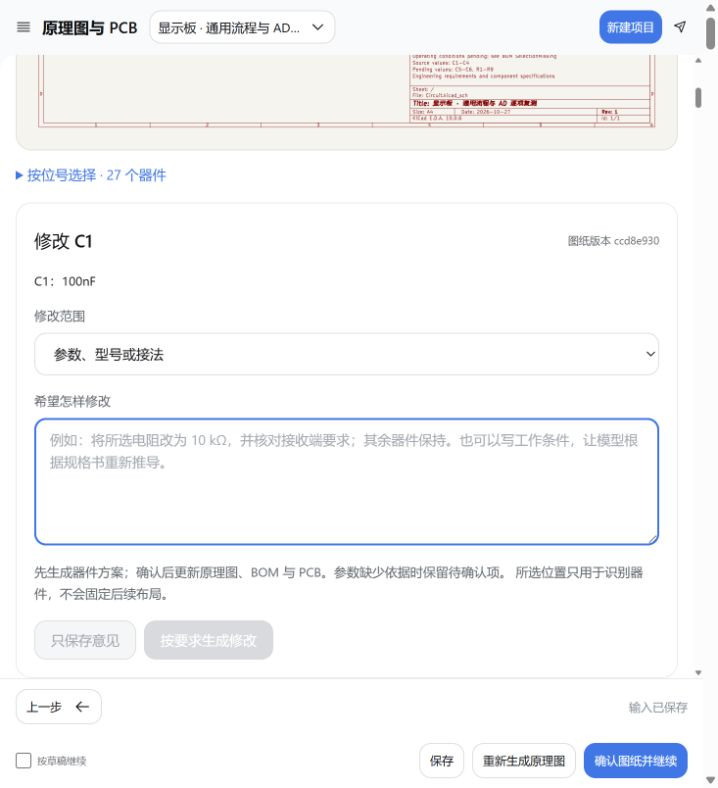

贴片导出已补齐主芯片 U1
本次修复外部封装遗漏装配类型的问题。下方原理图点选入口可填写实际参数要求。
| 实际结果 | 修复前 | 修复后 |
|---|
| 仅贴片坐标表 | 23 个，漏掉 U1 | 24 个，已包含 U1 |
| 四个导入封装的装配类型 | 均未声明 | U1 贴片；D1 / DS1 / DISP 插装 |
| 整板 DRC / 未连接 / 原理图一致性问题 | 0 / 0 / 0 | 0 / 0 / 0 |
本次是当前完整显示板的确定性元数据修复，新增模型调用 0 次。器件值、网络、焊盘、布局、走线逐对象比较保持不变；9 只电阻和 2 组电容差异未减少。下面保留上一轮真实模型的完整记录，累计布线改善不算作本次新增改善。
修复前贴片表 · 修复后贴片表 · 实际修复记录 · 重新读取当前 PCB 的 AD 差异表
整板连通与布线质量已复核
上一轮（round-0149）模型驱动流程重新核验并采用既有生成候选，已通过整板连通与布线质量复核；电气参数缺项和 AD 差异仍待工程师确认。
27 个器件、94 个物理焊盘。底面贴片、顶面插装、底层布线、禁止过孔、既有零欧跨线与铜区继续生效。去耦和储能距离目标为 10 mm。
本补丁安装包与源码、已安装插件的 284 个文件逐一一致；22 项针对性回归检查通过，并复核完整显示板及历史候选更新路径。安装验证
完整显示板，修改前后
右图是上一轮整板复测模型驱动流程重新核验后采用的既有生成候选；新候选也已实际生成并参与比较。
完整连通基线 · 501.44 mm上一轮整板复测选定结果 · 442.34 mm 此处使用已完整连通的 501.44 mm 基线。此前 442.34 mm 的候选有 5 个短段；随后一轮虽然缩短至 413.69 mm，却断开 GRID3。两类失败均保留，不能把断线带来的缩短计作改善。
方法：从实际断点搜索已有跨线器件的位置，检查填铜后孤立的返回焊盘，再调整局部滤波器件；接通后清理焊盘内重复线和共线碎段。输入与约束相同时重新核验已有生成候选，只有通过当前完整检查且质量更好的新结果才取代它。未复制 AD 坐标、参数或外部逐脚连线。
完整实测与验收依据 · 布局候选记录 · 局部修复记录 · 既有候选与采用来源
实际供电与返回路径
| 器件 | 完整连通基线 / mm | 上一轮整板复测 / mm |
|---|
| C1 | 92.00 | 17.06 |
| C5 | 8.79 | 8.04 |
| C6 | 98.62 | 20.13 |
按实际铜形以 0.1 mm 网格测量，包含供电与返回路径；不代表电流分布或回路电感。
意见有记录，修改有版本
打开原理图点选器件并填写要求 ↗
查看点选后填写要求的实际界面

1 · 选择并填写在原理图点击器件，查看当前参数，填写希望的参数、型号或工作要求。
2 · 生成并核对采用意见后重新生成对应步骤。缺少依据的参数保留未确定，下游旧图标为待更新。
3 · 对照并复核查看前后图纸、实际参数和检查结果，记录“已解决”或“仍需修改”。
本条评审保留了上一轮失败尝试，安装修复版后在同一条意见下重试。本条评审前后线长：442.34 → 442.34 mm；短段：3 → 3。版本、是否发生变化与候选来源均见下载记录。
上一轮整板复测记录：f1285080-6589-442e-b090-b45e0117bc6d · 状态：自动复核通过，待工程师签核。原理图点选只用于识别器件，不会变成布局坐标。
展开上一轮整板复测原始评审意见
继续复核当前完整显示板。此前新生成板出现 GRID3 断点，不能用较短但断线的结果替代已连通工程。本次按正式插件流程重新调用真实模型、生成并比较候选；若存在同一项目、输入和工艺约束一致的既有生成板，必须先用当前原理图、准确封装和规则重新核验，再参与比较，记录采用来源。已有生成位置不得写成固定坐标；不读取 AD 坐标或补外部逐脚连线。保留 27 个器件、参数及接法，底面贴片、顶面插装、底层布线、禁止过孔、既有零欧跨线和铜区，线宽 0.30 mm，去耦及储能距离目标 10 mm。必须核对全部信号及供电返回铜形，比较完整连通基线线长 501.44 mm、短段 4 个、二度拐点 90 个，以及 C1/C6/C5 完整供电和返回路径。9 只电阻和 2 组电容差异继续保留未确定，IRM-3638M3-X 后缀待核实；DRC 通过不等于与 AD 对齐。本意见依据用户持续授权记录，待工程师签核。
下载评审记录 · 打开原理图填写实际修改要求
参数差异仍如实保留
上一轮整板复测复核并保留布局布线结果；9 只电阻、2 组电容的参数差异减少 0 项。当前工作条件不足以唯一推出 AD 的值，未为了相似而改值。
查看推导条件与待核实规格书
工程师电脑的安装条件
重新生成需要 Harness、本插件、KiCad 完整程序与库、配置好的 Python 依赖和 Java。Freerouting 已随插件提供。没有 KiCad 时可查看 Demo、已有图纸并记录意见；补齐工具后才能生成与检查。
目前走本机工具链，没有自动转发到远程 CAD 电脑的功能。环境检查入口位于插件左侧“环境与安装”。